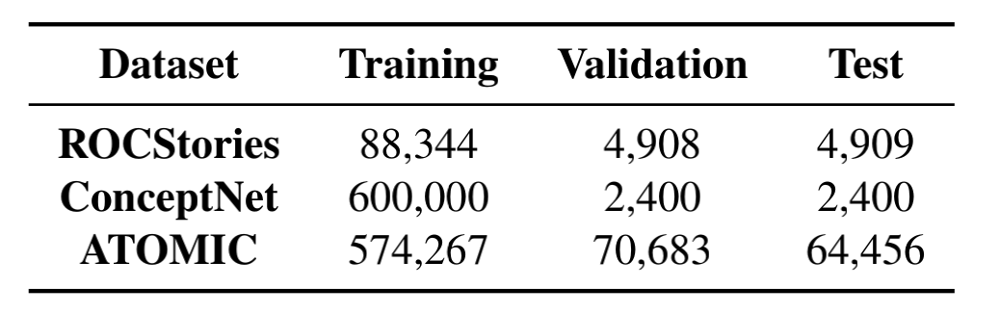
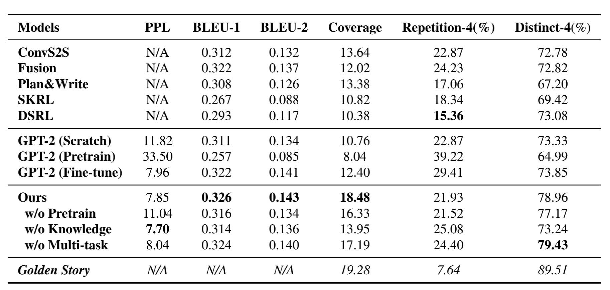
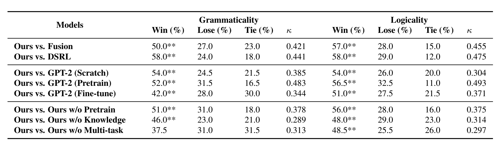

Motivation
预训练语言模型生成的故事仍然有repetition、logic conflicts并且缺少long-range coherence的问题，作者认为这是因为缺少常识知识。
- 故事生成是机器理解自然语言的strong indicator；
- 故事生成时部分entity可能因为其low frequency而被忽略；
- 生成通用的文本，创造性较差，因此在给定input之后不给其他指导的生成任务很难；
Framework
使用GPT-2进行post-train，实验设计如下：
- 利用常识知识进行训练。从ConceptNet和ATOMIC提取三元组并将三元组使用template-based方法转化为人类语言的句子并进行生成训练；
- 多任务学习。设计三种错误（disordered logic, unrelated topics, or repeated plots）的故事集合，并使用分类器判断是否是正确的生成的故事，从而让模型学习生成更加合理的故事文本。最终的loss是所有loss的和；
Dataset

Metrics

